LEVITAR 3D: EVOLVED
Copyright 2006 by Les Bird
HOW TO PLAY
The object of Levitar 3D: Evolved is to destroy all the defenses located through-out each mission. It can best be described as Lunar Lander meets Gravitar and in fact was inspired by these very games. Your ship is equipped with a tractor beam and particle cannon. Weapon upgrades can be obtained as you play through the missions. The game is over when all your ships are gone or if you run out of fuel. Bonus ships are awarded every 100,000 points.
The first screen you see is the stat screen. This screen will update you on what you can expect in the next mission. Data on the right side of the stat screen includes information on the environment and the defenses you can expect to encounter on the planet surface plus your current ship inventory. Data on the left side of the stat screen includes pilot information, the mission objective and the research lab where new weapon upgrades are researched.
The game consists of 6 episodes. Each episode takes place on a different planetary body with different environmental conditions. Use the gamepad to view the different episodes by moving the left analog stick to the left or right or by using the d-pad left/right buttons.
SHIP CONTROL
Levitar 3D: Evolved was designed to be played with a dual analog stick gamepad as found on many game consoles. Keyboard and mouse are also supported.
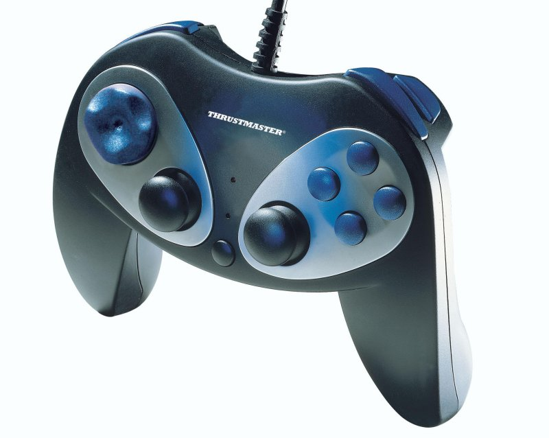
The left stick is used to rotate your ship to the left and right. The right stick is used to thrust your ship in the direction it is pointing. Press F1 at anytime during the game to bring up a help screen showing the gamepad button layout.
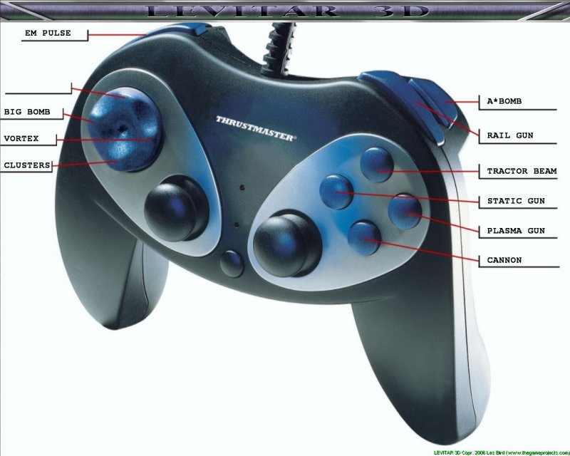
When a new weapon upgrade is obtained the help screen will automatically appear and display the button for the new weapon. The player must press the weapon button to confirm and continue the game.
KEYBOARD CONTROLS
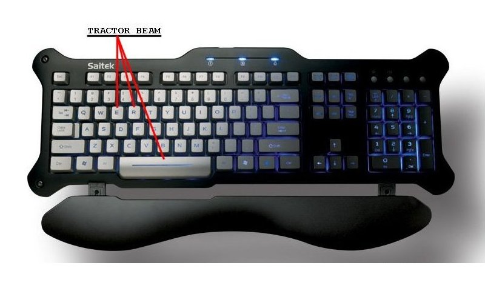
Other active keys are 'F1' for help and 'ESC' to abort the mission or quit the game.
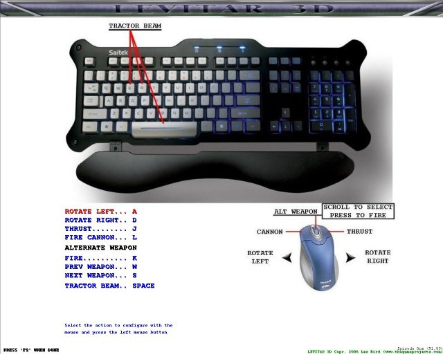
To configure the keys go to the help screen by pressing 'F1' then press 'F2' to enter the keyboard configuration menu and follow the directions at the bottom of the screen.
MOUSE CONTROLS
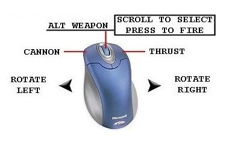
Scroll
the middle mouse button
to select a weapon.
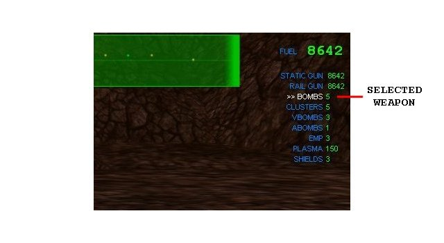
Press the middle mouse button to fire the selected weapon.
TRACTOR BEAM
Your ship is equipped with a tractor beam. The tractor beam can be used for multiple purposes but it's primary use will be to transport objects to the collector. Some missions require this to be done before the mission can be completed.
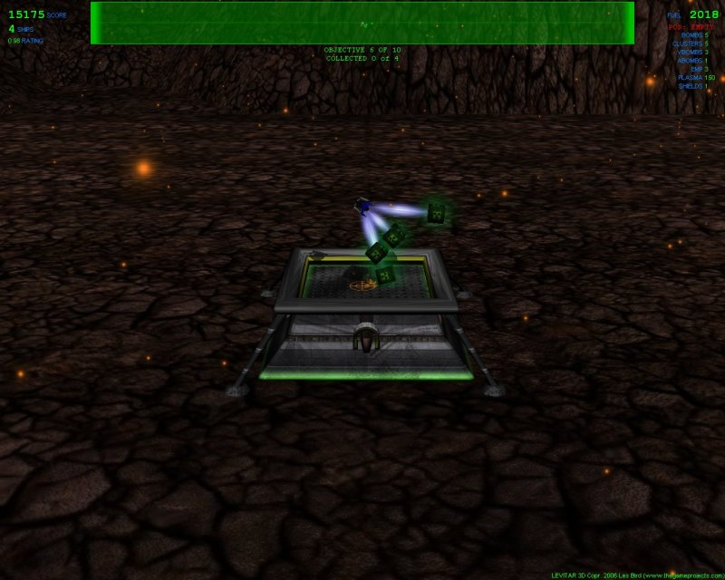
The tractor beam can also be used to re-fuel your ship by picking up any of the defenses (cannons, tanks, flying saucers). If an object is tractor beamed any fuel in it will be automatically transferred to your ship. The tractor beam can be activated and deactivated by pressing the appropriate button on the gamepad. Fuel pods must be transported to the collector in order to transfer fuel from them.
WEAPONS
Your ship is initially equipped with a particle cannon as it's only weapon. Upgrades can be obtained in certain missions by picking up defenses with your tractor beam that have been destroyed and that indicate they contain technology.
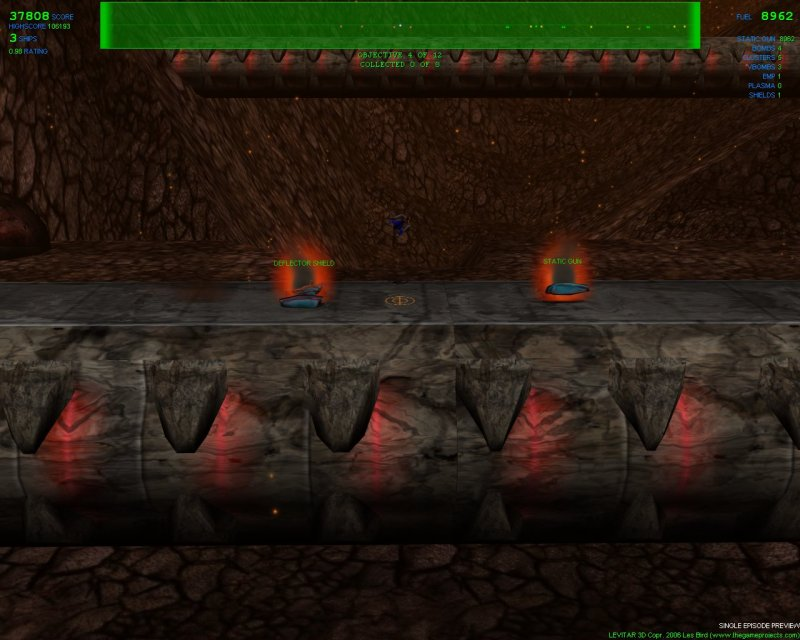
By transporting these defenses to the collector they will be dismantled and researched by the research lab. Some weapons require more time to research than others. Once the research time has expired that weapon or technology will be added to your ship.
Weapon upgrades consist of the following:
BOMBS
Cluster Bomb - Once the bomb impacts the surface it explodes into several smaller bomb clusters that spread out and explode.
Big Bomb - Upon impact with the surface it explodes destroying everything in a large radius around the impact point. You should be sure to get out of it's radius otherwise you could be destroyed too.
Vortex Bomb - When detonated it opens up a small vortex that sucks in surrouding objects. This bomb can be detonated at anytime by pressing the vortex bomb button while it is falling.
Sub-Atomic Bomb - Not quite an atomic bomb but close. It is the most powerful explosive device made and has an extremely large radius.
GUNS
Static Gun - Hold down the static gun button to activate. It will consume fuel but destroys anything it touches.
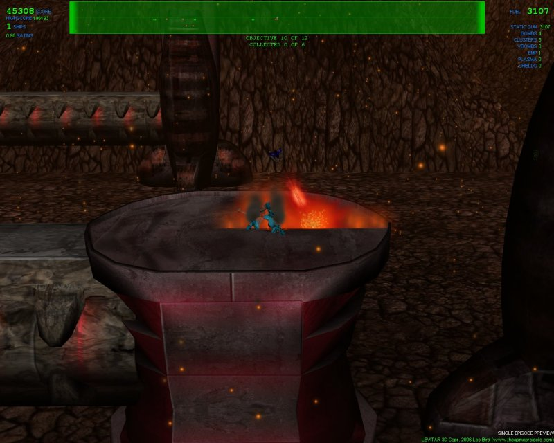
Rail Gun - Press the rail gun button to fire this powerful weapon. It will shoot a particle at nearly the speed of light and destroys anything in it's path. If multiple defenses are lined up properly you can destroy them all with one rail gun shot. This weapon will consume 200 units of fuel each time it is activated.
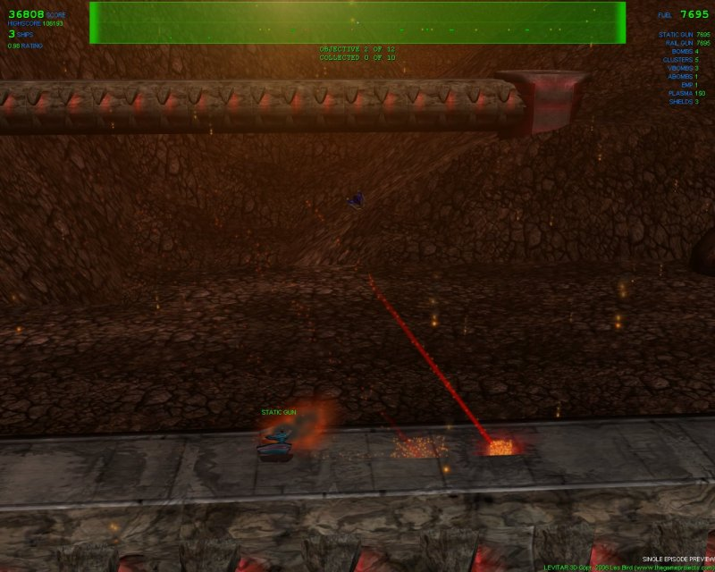
Plasma Gun - Hold down the plasma gun button to fire this rapid fire weapon. It will shoot out streams of hot plasma.
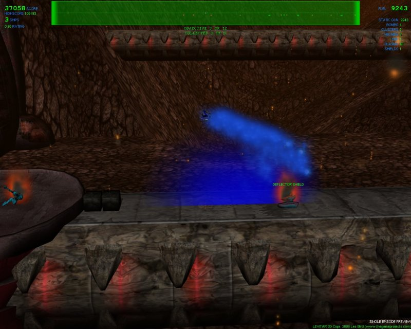
ELECTRONIC
Electro-Magnetic Pulse - Press the EM Pulse button to activate. This weapon disables any defenses within it's radius. Once disabled they will fire erratically and any hovering or flying objects will fall to the ground.
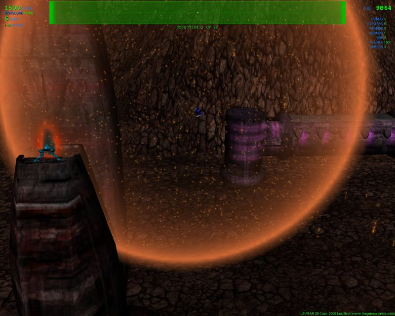
WEAPON AVAILABILITY
Episode 1 (Io)
Shields, static gun, cluster bombs, emp
Episode 2 (Luna)
Plasma gun, big bomb
Episode 3 (Pluto)
Rail gun, vortex bomb
Episode 4 (Venus)
Sub-Atomic Bomb